Jack-knifing a Multitaper SDF estimator¶
Assume there is a parameter  that parameterizes a distribution, and that the set of random variables 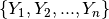 are i.i.d. according to that distribution.
that parameterizes a distribution, and that the set of random variables 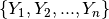 are i.i.d. according to that distribution.
The basic jackknifed estimator 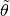 of some parameter is found through forming pseudovalues  based on the original set of samples. With n samples, there are n pseudovalues based on n “leave-one-out” sample sets.
based on the original set of samples. With n samples, there are n pseudovalues based on n “leave-one-out” sample sets.
General JN definitions¶


Now the jackknifed esimator is computed as

This estimator is known (?) to be distributed about the true parameter theta approximately as a Student’s t distribution, with standard error defined as

General Multitaper definition¶
The general multitaper spectral density function (sdf) estimator, using n orthonormal tapers, combines the n 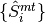 sdf estimators, and takes the form
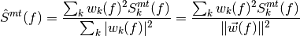
For instance, using discrete prolate spheroidal sequences (DPSS) windows, the 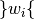 set, in their simplest form, are the eigenvalues of the spectral concentration system.
A natural choice for a leave-one-out measurement is (leaving out the dependence on argument f)
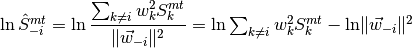
where 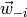 is the vector of weights with the ith element set to zero. The natural log has been taken so that the estimate is distributed below and above 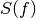 more evenly.
Multitaper Pseudovalues¶
I’m not quite clear on the form of the pseudovalues for multitaper combinations.
One Option¶
The simple option is to weight the different leave-one-out measurements equally, which leads to
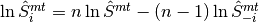
And of course the estimate of is given by
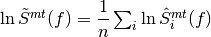
Another Option¶
Another approach seems obvious which weights the leave-one-out measurements according to the length of . It would look something like this
Then the pseudovalues are
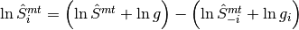
and the jackknifed estimator is
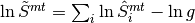
and I would wager, the standard error is estimated as
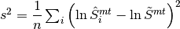